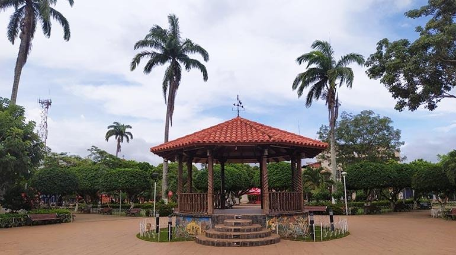
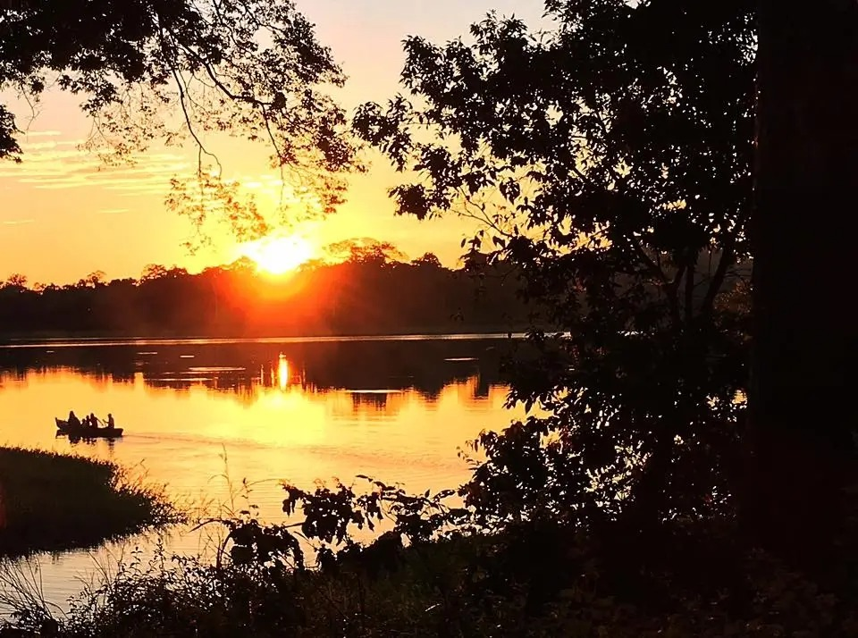
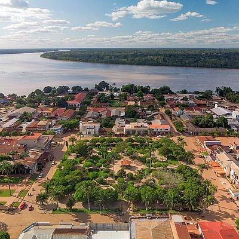

Historia y Ubicación
Riberalta es una ciudad ubicada en el departamento de Beni, en el norte de Bolivia. Conocida como la "Capital Amazónica de Bolivia", es un importante centro de producción de castaña y caucho.
Atractivos Turísticos
Riberalta cuenta con paisajes naturales impresionantes, ríos caudalosos y una biodiversidad única. Lugares como la Laguna Victoria y el río Beni son destinos populares para los visitantes.
Cultura y Gastronomía
La cultura de Riberalta es una fusión de tradiciones indígenas y mestizas. Su gastronomía incluye platos típicos como el "Dunucuabi" y el "Masaco de Plátano".
